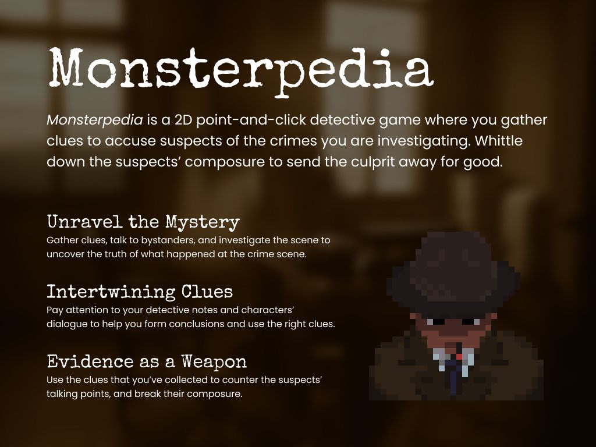

立项时我们先用一页 One Pager 把方向定死：做一款靠线索推理和心理博弈的 2D 点击解谜游戏。
MONSTERPEDIA
超自然调查与社交博弈
01. OVERVIEW // 游戏概念企划

02. THE PITCH // 超自然调查与社交博弈
玩家是一名侦探，查的案子表面普通，背后另有真相。这游戏的"战斗"不动手：先勘查现场、收集证据、和旁观者聊天，然后在对质里拿证据反驳嫌疑人的说法，一点点磨掉他的心理防线（Composure），直到伪装破掉、真凶现形。
03. ARCHITECTURE & POSTMORTEM // 架构重构与开发复盘
项目做到一半，加新机制越来越费劲——线索系统和对话系统耦合得太死，改一处动全身。我把底层重构成了基于 ScriptableObject 的数据与逻辑分离架构，重构之后，配一条新线索从 30 分钟降到 20 分钟，配置时间少了三分之一。
这次重构也让我记住了一件事：系统不提前为扩展性做规划，团队协作就会卡在你这里。
04. ART ASSETS // 角色设计与像素动画
游戏是复古像素风。为了让对质更有压迫感，每个嫌疑人和旁观者都有自己的待机动画，各带各的小动作。

Detective (Player)

Bartender (Bystander)

Werewolf (Suspect)